A2: Parametric Modelling with Grasshopper
by Kefeng Wang in HCDE598

This is the outcome of my laser Cutting.

This is the screenshot of the overview in the Grasshopper. There are five steps of making the shape shown below.
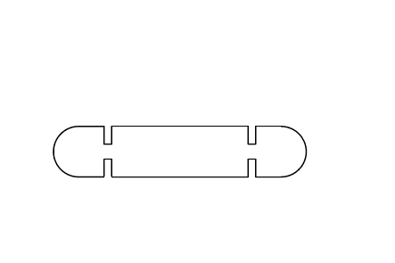
I exported rihno modeling into Adobe Illustrator.The image above is how it look like in SVG file. It is about
10 cm long and 2 cm wide.
The first step is to create a rectangular as the main body. Its width is twice of the radius of the cicle on
each side. And it should be 1 radius away from the orgin.
The second step is to create two circles on the each side of the rectangular. Because the the radius of the circle is connected with the width of the rectangular, I used a number slider to control this variable.
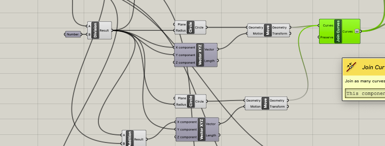 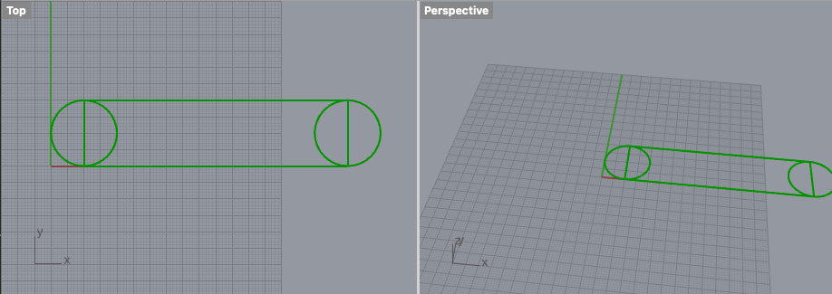Then, using the TRIM function creates two semicircles; makes the semicircles and rectangular together. I was straggling with the function modules "TRIM with Region" and "Trim with Regions". It took me extreme long to figure it out.
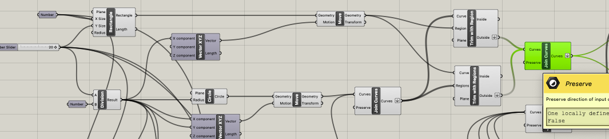 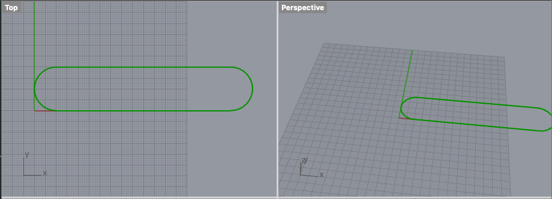Next step is to create four small rectangulars. I would use these four rectangular to create notches. I used number slider to indicate its width so that it could be used for cardboards with various thickness. I have used the move function to arrange the location of these rectangulars. Two are on the upper side, and two are on the bottom side.
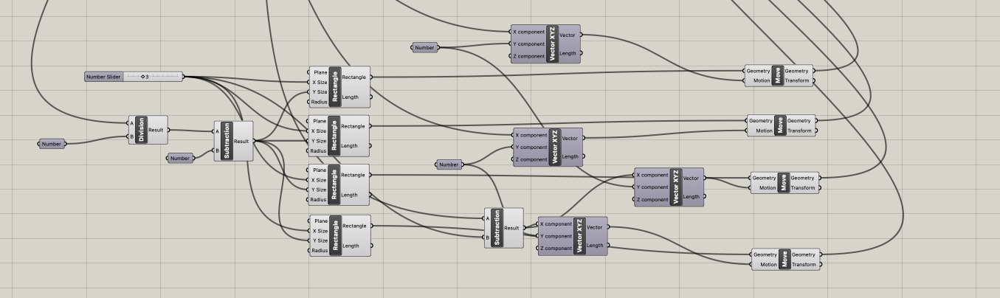 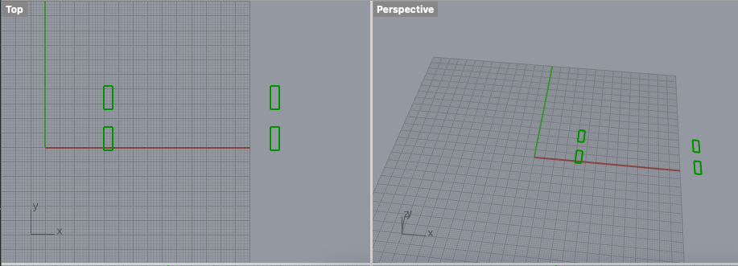The fourth step is to group these four rectangular together and trim them with outline made in the previous step. “Flatten” was one of the confusing part for me. At first I did not flatten the joint curves, when I pluged them with trim function, an error message poped up.
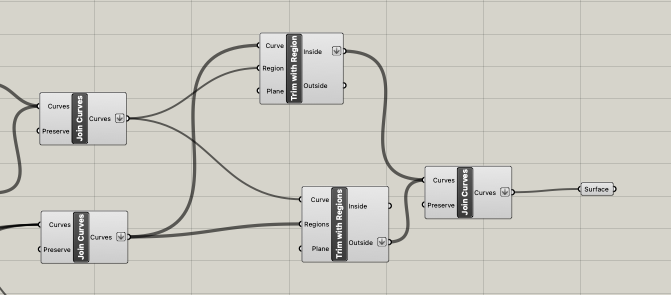 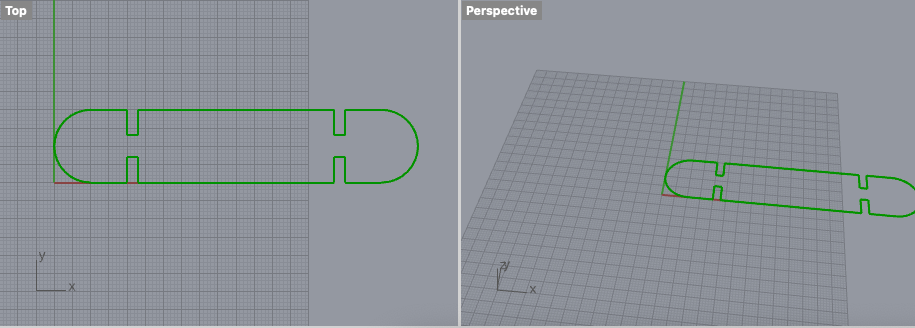The last step is to make the joint curves into surface.
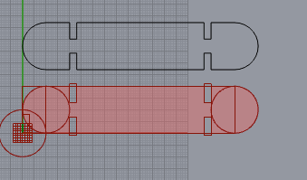I used a laser cut in GIX, another master program located in Bellevue. They have way better equipments than the Mill has. They could review print-outs on our laptop directly through the App. This is how it looks like.
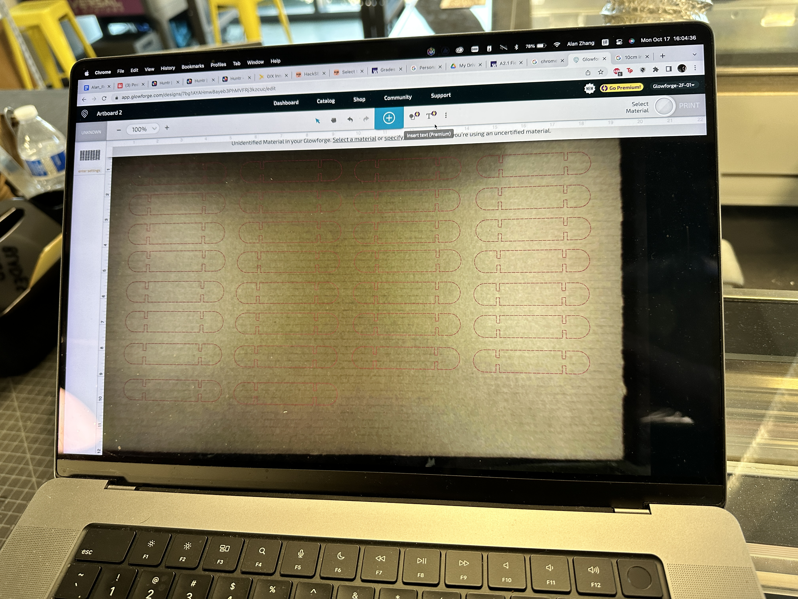Video of Laser Cutting!!!
Here is all the documentation for assignment 2!
You can go back to the HOME PAGE from here.